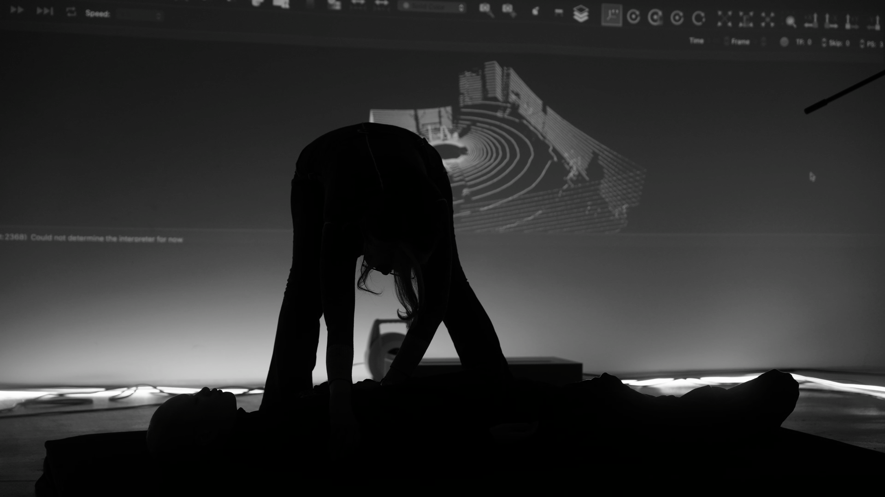
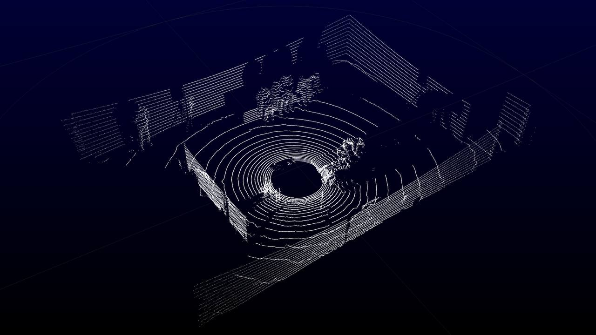

모스키토라바쥬스, 텅 빈 엄마와 거짓말 하는 딸, 2022. 영상: 박태영.
Mosquitolarvajuice, The empty mother and the lying daughter, 2022. Video: Park Tyeyoung, 2022 ⓒ Cha Yeonså.
모스키토라바쥬스, 천장 아래, 2022. 영상: 박태영.
Mosquitolarvajuice, Under the Ceiling, 2022. Video: Park Tyeyoung, 2022 ⓒ Cha Yeonså.
모스키토라바쥬스, 하늘 아래, 2022. 영상: 박태영.
Mosquitolarvajuice, Under the Sky, 2022. Video: Park Tyeyoung, 2022 ⓒ Cha Yeonså.
모스키토라바쥬스, 천장 아래, 2022. 영상: 박태영.
Mosquitolarvajuice, Under the Ceiling, 2022. Video: Park Tyeyoung, 2022 ⓒ Cha Yeonså.
모스키토라바쥬스, 하늘 아래, 2022. 영상: 박태영.
Mosquitolarvajuice, Under the Sky, 2022. Video: Park Tyeyoung, 2022 ⓒ Cha Yeonså.
모스키토라바쥬스, 두 개의 방 사이로 통로, 2022. 사진: 홍지영.
Mosquitolarvajuice, Passage Between Two Rooms, 2022. Photo: Hong Jiyoung, 2022 ⓒ Cha Yeonså.
모스키토라바쥬스, 아글라야 페터라니 읽기, 2022. 강의자: 양효실, 센서: 차연서, 이상화.
Mosquitolarvajuice, Reading Aglaja Veteranyi, 2022. Lecturor: Yang Hyosil, Sensor: Cha Yeonså, Lee Sanghwa. 2022 ⓒ Cha Yeonså.

모스키토라바쥬스, 천장 아래, 2022. 센서: 차연서, 이상화.
Mosquitolarvajuice, Under the Ceiling, 2022. Sensor: Cha Yeonså, Lee Sanghwa. 2022 ⓒ Cha Yeonså.
모스키토라바쥬스, 끝이 없는 집, 2022. 조각 원본: 이미래, 3D 스컬핑: 김영광, 게임엔진 개발: 차연서.
Mosquitolarvajuice, Endless House, 2022. Original Sculpture: Mire Lee, 3D Sculpting: Kim YoungGyang, Game Engine Developing: Cha Yeonså. 2022 ⓒ Cha Yeonså.